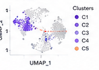
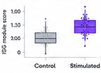
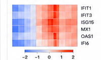
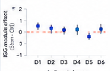

Finding: IFN-high monocyte state
Stimulation-associated IFN-high monocyte state
!
Robust computational
Not orthogonally validated
Dataset: ID5521
Thread: Monocyte stimulation response
S4 excluded
Evidence
ISG module higher in stimulated monocytes
Donor-aware pseudobulk supports IFN response
Effect persists excluding S4
Leave-one-donor-out supports module-level result
Top genes: IFIT1, IFIT3, ISG15, MX1, OAS1
Caveats
No protein-level validation yet
CXCL10 single-gene effect is donor-sensitive
Abundance shift weaker than expression shift
Batch should remain visible in downstream plots
Monocyte UMAP

CheckedISG module score

CheckedISG gene heatmap

CandidateLOO check

Checked
Guide · focused on this finding
Today
PP
Peter11:18 AM
Save this as a finding.
Guide11:18 AM
I saved this as a finding: stimulated monocytes show an IFN-like transcriptional response. I marked it as a robust computational result because the module-level effect is donor-consistent and survives S4 exclusion.
PP
Peter11:19 AM
What is still missing before this can become a main figure?
Guide11:19 AM
The main missing piece is orthogonal validation. For a biological figure, the donor-level ISG module score is strong enough to become a candidate panel. For a stronger biological claim, I recommend protein validation or comparison to an independent reference dataset.